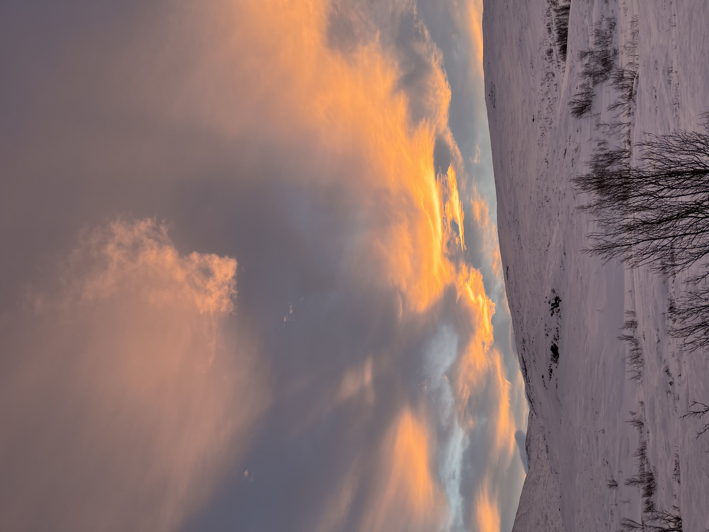
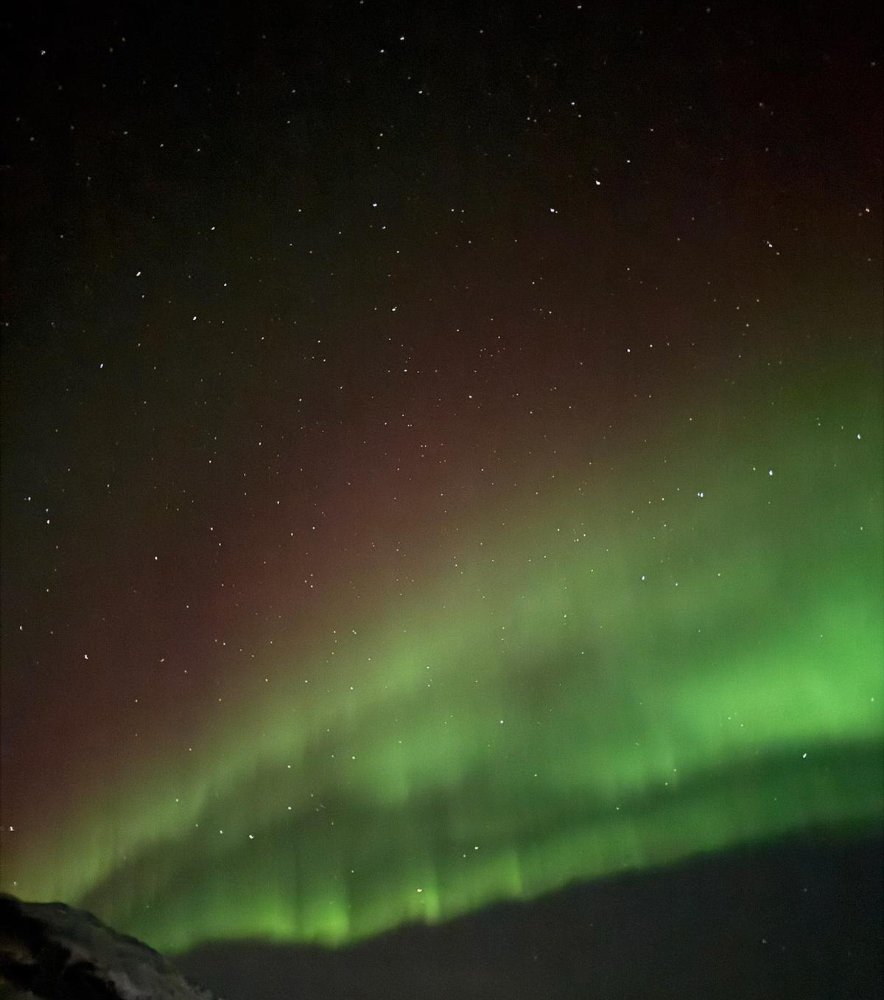
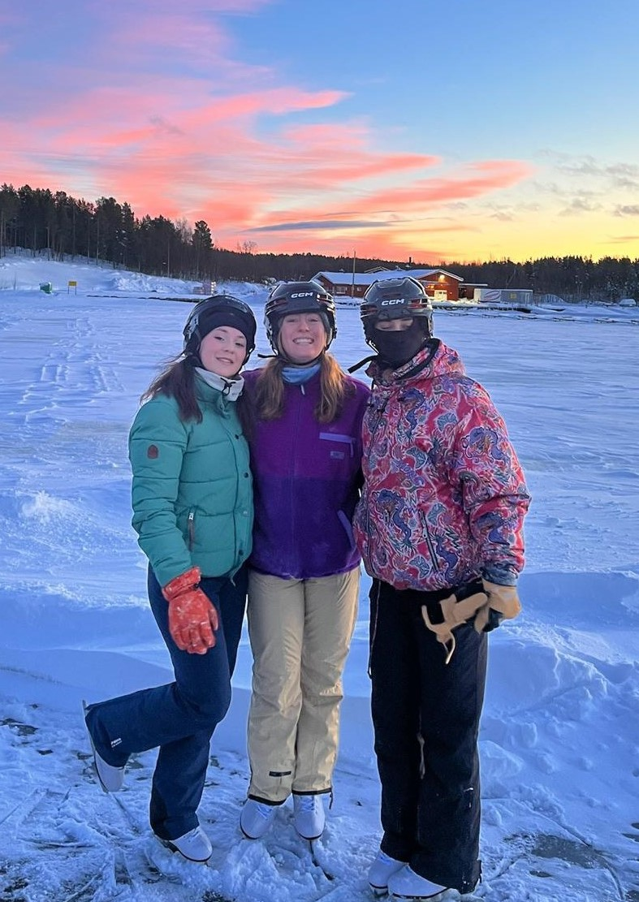
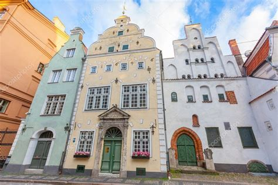
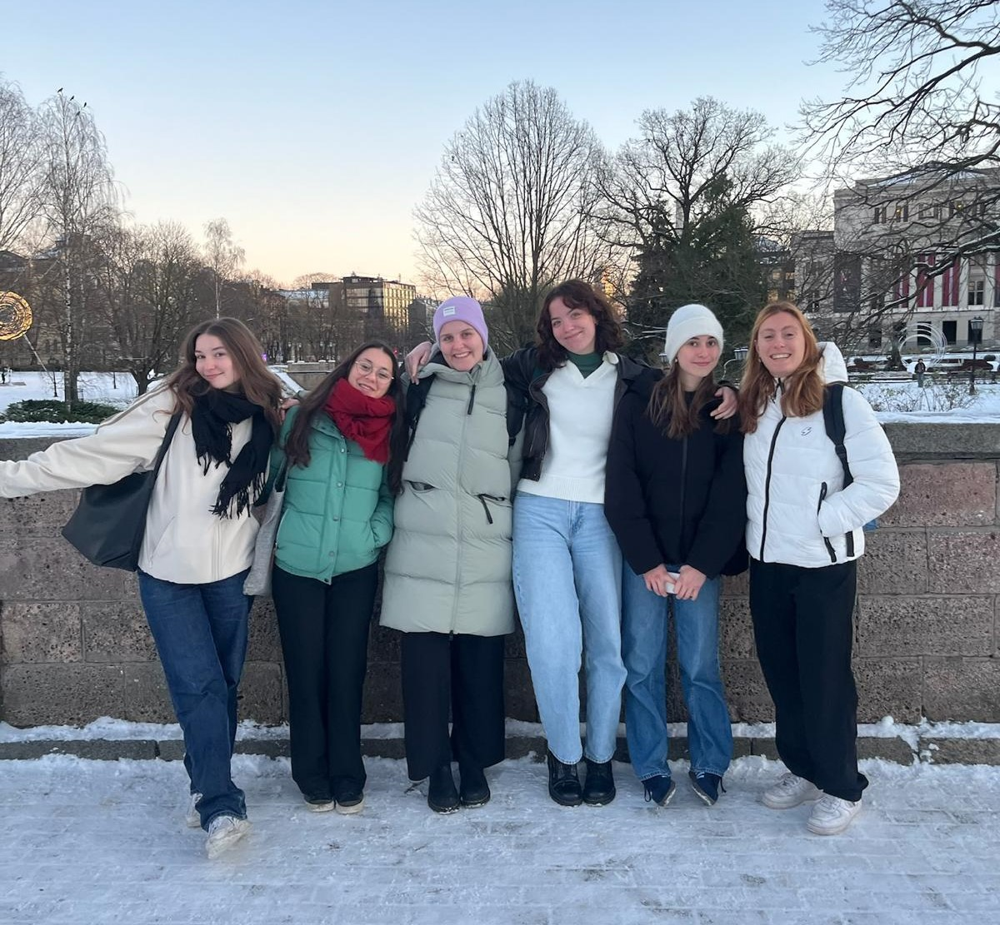
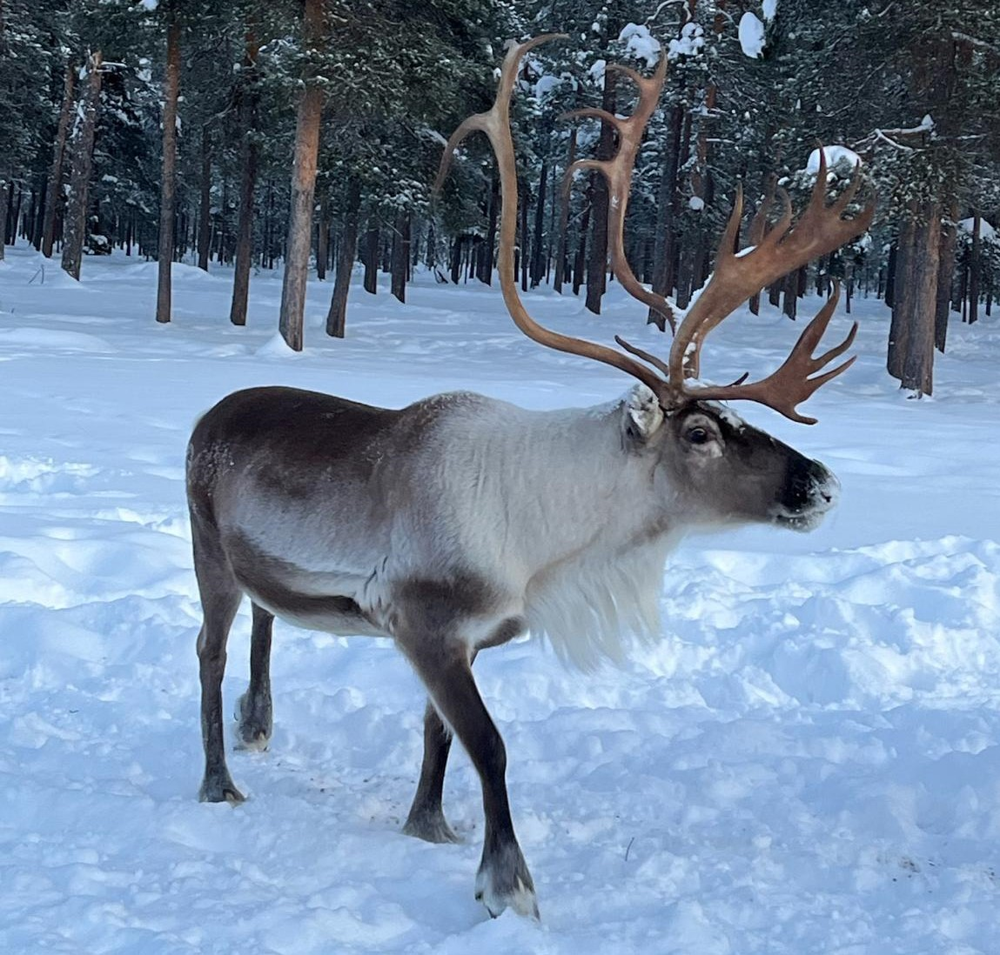

Aventure scandinave d'Elisa et Paola
Elisa

J’ai découvert le pays de plusieurs façons différentes. Tout d’abord j’ai découvert le pays en voyageant. Je suis allée visiter Göteborg en octobre, la Laponie en novembre et Stockholm à Noël. Ces voyages m’ont permis de découvrir les paysages suédois ainsi que deux des plus grandes villes du pays.
Göteborg est une ville très verte au Sud Ouest de la Suède et à deux heures de train de Karlstad. Parcs et jardins botaniques se succèdent dans une des villes principales de la Suède qui est connue pour ses grands boulevards et pour ses canaux.

Stockholm qui est la capitale de la Suède est également connue pour ses canaux. Pendant la saison des fêtes, on y trouve les marchés de Noël, le Glögg, vin chaud suédois et des musées enneigés. Pendant les fêtes, les suédois pendent d’ailleurs tous des étoiles de Noël et des chandeliers lumineux à leurs fenêtres.
Le voyage en Laponie était organisé par l’université avec l’aide d’un tour opérateur, ce qui nous a permis d’y aller sans payer trop cher. Ce voyage était une des raisons de mon choix de la Suède. Nous avons pu observer les aurores boréales, nous baigner dans des lacs gelés et nourrir des rennes. Ce voyage fut de loin la meilleure expérience de mon échange et l’un des plus beaux voyages que j’ai pu faire.
J’ai ensuite découvert le pays au travers de ma famille d’accueil qui m’a permis de découvrir certaines traditions comme les ateliers cuisine pour faire des roulés à la cannelle ainsi que certains endroits comme le parc de Mariebergsskogen. Elle m’a notamment permis de discuter de certains aspects que je n’aurais pas pu expérimenter pendant la courte période du s7. Nous avons notamment pu parler du système de santé suédois qui est apparemment et contre toute attente, déficient. Nous avons également abordé les questions de politique en Suède avec notamment la radicalisation du pays et la montée du SD ( Sweden Democrats) dans les sondages.
J’ai également découvert la Suède grâce aux activités que j’ai pu faire avec mes amis. Nous avons notamment assisté à un match de hockey sur glace, sport national de la Suède. Nous sommes également partis faire du patin à glace, à savoir que la pratique de ce sport est totalement gratuite en Suède. En effet, les patinoires sont ouvertes à tout le monde et il est possible de louer du matériel de sport dans les endroits que l’on appelle des FritidsBanken, qui sont ce qu’on pourrait appeler des banques de prêts de matériel.
figure 2 : photo de Göteborg
figure 3 : photo de paysage en Laponie
Paola
Pendant mon séjour Erasmus en Finlande, je dois avouer que je n'ai pas énormément voyagé à travers le pays, étant basée à Joensuu, une petite ville souvent qualifiée de "au milieu de nulle part", mais qui, en réalité, regorge de trésors naturels. Joensuu est située à proximité de la Russie, ce qui lui donne une atmosphère un peu isolée mais aussi un charme unique. L'un des aspects les plus remarquables de Joensuu, et de la Finlande en général, est le nombre impressionnant de lacs présents dans le pays. La Finlande est d'ailleurs connue pour ses milliers de lacs, et à Joensuu, nous avions la chance d'avoir un lac juste à proximité. Ce lac, avec ses eaux calmes et ses paysages paisibles, ajoutait encore à la beauté de la ville. J'ai pu y passer des moments de détente, que ce soit pour une promenade au bord de l'eau ou même pour une baignade rafraîchissante pendant l'été.
J'ai également eu la chance de découvrir les paysages époustouflants des alentours, notamment en visitant plusieurs fois le parc national de Koli, un lieu emblématique de la région. Ce parc est particulièrement magique en automne, avec ses arbres aux couleurs flamboyantes, et en hiver, quand la neige recouvre tout, offrant un panorama féérique.
J'ai aussi eu l'occasion de visiter Helsinki, la capitale finlandaise, mais aussi la jolie ville de Porvoo, située en périphérie et connue pour son architecture pittoresque. Cependant, la grande aventure de mon voyage a été ma visite en Laponie, un rêve que je nourrissais depuis longtemps et qui a largement motivé mon choix de la Finlande pour mon Erasmus. La Laponie m'a fait vivre des moments inoubliables : visiter le village du Père Noël, caresser des rennes, faire du patin à glace sur un lac gelé, randonner en raquettes sous un ciel cristallin et, cerise sur le gâteau, me baigner dans l'océan Arctique après un sauna finlandais. Cette expérience en pleine nature a été une immersion totale dans l'écosystème unique de la région, et un véritable cadeau pour les sens.
Grâce à mon temps libre, j'ai également eu l'opportunité de voyager davantage, et l'un des endroits que j'ai visités a été Tallinn, la capitale de l'Estonie. Tallinn se trouve à seulement deux heures de ferry d'Helsinki, ce qui rendait le trajet très pratique. J'ai été particulièrement séduite par l'architecture médiévale de la ville, ses rues pavées et ses bâtiments anciens qui m'ont plongée dans un autre temps. De plus, l'influence de la culture russe est très présente à Tallinn, ce qui ajoutait une dimension fascinante à ma visite. L'Estonie m'a donc vraiment plu, et j'ai trouvé que la ville offrait un beau mélange entre histoire, culture et modernité.
Je suis également allée à Riga, la capitale de la Lettonie, où j'ai pu explorer son centre historique classé au patrimoine mondial de l'UNESCO, flâner le long de ses rues pittoresques et admirer l'architecture art nouveau. Comme Tallinn, Riga possède une forte influence russe, ce qui donne à la ville un côté dépaysant et unique. Les deux villes, avec leur ambiance médiévale et leur héritage russe, m'ont beaucoup marquée et ont été parmi les points forts de mes voyages pendant mon Erasmus.
Enfin, j'ai eu la chance de visiter Stockholm, la capitale de la Suède. Cette ville sur l'eau m'a captivée par son ambiance, sa modernité et ses îles, qui créent une atmosphère unique. Chaque ville m'a permis de découvrir des facettes différentes des pays nordiques, enrichissant ainsi mon expérience Erasmus.
Au-delà de l’aspect touristique, ce séjour m’a aussi permis d'approfondir mes connaissances sur différents aspects de la Finlande, notamment sa culture, son histoire et ses particularités géographiques et géopolitiques. Par exemple, la Finlande, en raison de sa proximité avec la Russie, possède une histoire marquée par des influences russes et scandinaves, et a connu des périodes de tensions géopolitiques. Le pays est également un modèle en matière d'innovation technologique et écologique, notamment en matière de gestion durable des forêts, secteur majeur de son économie. Cela fait d’ailleurs partie de l'identité finlandaise : la nature est omniprésente dans la vie quotidienne et représente un aspect fondamental de leur culture. Ce contact avec la nature et cette relation profonde à l'environnement m’ont permis de mieux comprendre les valeurs écologiques qui animent le pays.
figure 2 : photo d'une séance de patin à glace sur un lac gelé en Laponie
figure 3 : photo des maison de la veille ville de Tallinn, capitale de l'Estonie
figure 4 : photo de mes amies et moi à Riga, capitale de la Letonie
figure 5 : photo d'un renne en Laponie
Question d'Elisa :
As-tu observé une différence notoire entre les suédois et les finlandais lors de ton voyage à Stockholm ?
Lors de mon voyage à Stockholm, j’ai remarqué quelques différences entre les Suédois et les Finlandais, même si ces deux peuples partagent certaines similitudes culturelles, notamment leur respect de l’espace personnel et leur discrétion dans les interactions sociales.
Ce qui m’a le plus frappée, c’est que les Suédois m’ont semblé plus ouverts et extravertis que les Finlandais, qui sont souvent perçus comme plus réservés. À Stockholm, j’ai trouvé qu’il était plus facile d’engager une conversation avec des locaux, même si cela restait dans un cadre assez formel et poli. En Finlande, les interactions sont généralement plus directes et les silences sont mieux acceptés dans une conversation, ce qui peut parfois donner une impression de distance.
J’ai aussi remarqué que les Suédois ont une culture plus influencée par l’international, notamment grâce à leur aisance en anglais et leur ouverture aux tendances venues d’autres pays. En Finlande, bien que l’anglais soit aussi très bien maîtrisé, j’ai trouvé que la culture locale était plus marquée et préservée, avec une forte identité nationale.
Enfin, un autre détail qui m’a marquée, c’est l’attitude face au climat. Les Finlandais semblent beaucoup plus habitués aux conditions extrêmes de l’hiver et s’adaptent naturellement à la neige et au froid, alors qu’à Stockholm, malgré le climat nordique, j’ai eu l’impression que les gens étaient moins « préparés » ou en tout cas, qu’ils le vivaient différemment.
En résumé, bien que les Suédois et les Finlandais partagent plusieurs traits culturels, j’ai trouvé les Suédois plus accessibles et tournés vers l’international, tandis que les Finlandais m’ont paru plus discrets et attachés à leurs traditions.